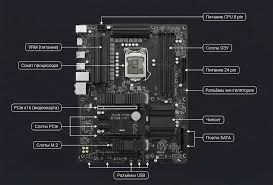

Добро пожаловать в главный аналитический раздел нашего журнала. Здесь мы разбираем устройство персонального компьютера, помогаем определиться с выбором комплектующих для сборки рабочей станции или игрового ПК, а также изучаем архитектурные изменения рынка электроники.
Современный персональный компьютер состоит из множества модулей, слаженная работа которых определяет общую производительность системы. Ниже приведены ключевые узлы, требующие особого внимания при покупке:
Для облегчения выбора мы составили сводную таблицу актуальных на сегодняшний день платформ для сборки ПК:
| Критерий сравнения | Платформа Intel (LGA1851 / LGA1700) | Платформа AMD (AM5) |
|---|---|---|
| Тип поддерживаемой памяти | DDR5 / DDR4 (в зависимости от платы) | Только DDR5 |
| Энергоэффективность | Средняя (высокое потребление в нагрузке) | Высокая (техпроцесс TSMC) |
| Перспектива апгрейда | Низкая (смена сокета каждые 2 поколения) | Высокая (поддержка сокета до 2027+ года) |
| Позиционирование | Универсальные решения, работа с медиа | Лучший выбор для геймеров (X3D серии) |
Правильное охлаждение компонентов зоны VRM на материнской плате напрямую влияет на стабильность работы процессора под нагрузкой. Ниже представлена типовая схема расположения элементов на плате формата ATX:
